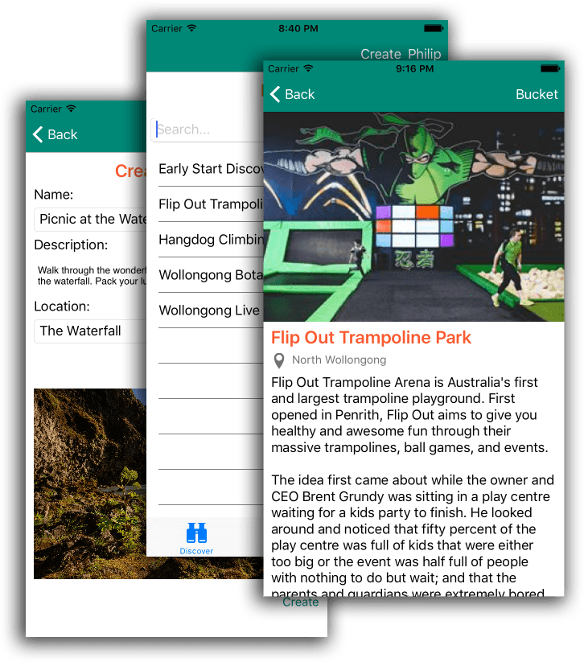

A cross platform mobile application titled Bucketed to track items and check them off your bucket list. This application is tightly focused on one task – to manage a bucket list with one additional feature – a global activities list which users can search, select from and contribute toward.
By integrating a global activities list into the application, Bucketed can leverage this for future monetisation by introducing sponsored/promoted activities which would allow businesses to pay for increased visibility where their Activity is displayed or featured deals for advertising within the Activity lists. These forms of monetisation would enable the application developer to establish an ongoing self-sustaining business around the application.
The application will be developed using Xamarin Forms components to build a Cross-Platform application which will available on the iOS, Android and Windows Phone platforms. Persistent storage of application data is managed by a server backend using the Parse.com platform.
This project was submitted for assessment as part of my Masters of Mobile Application Development course with Charles Sturt University